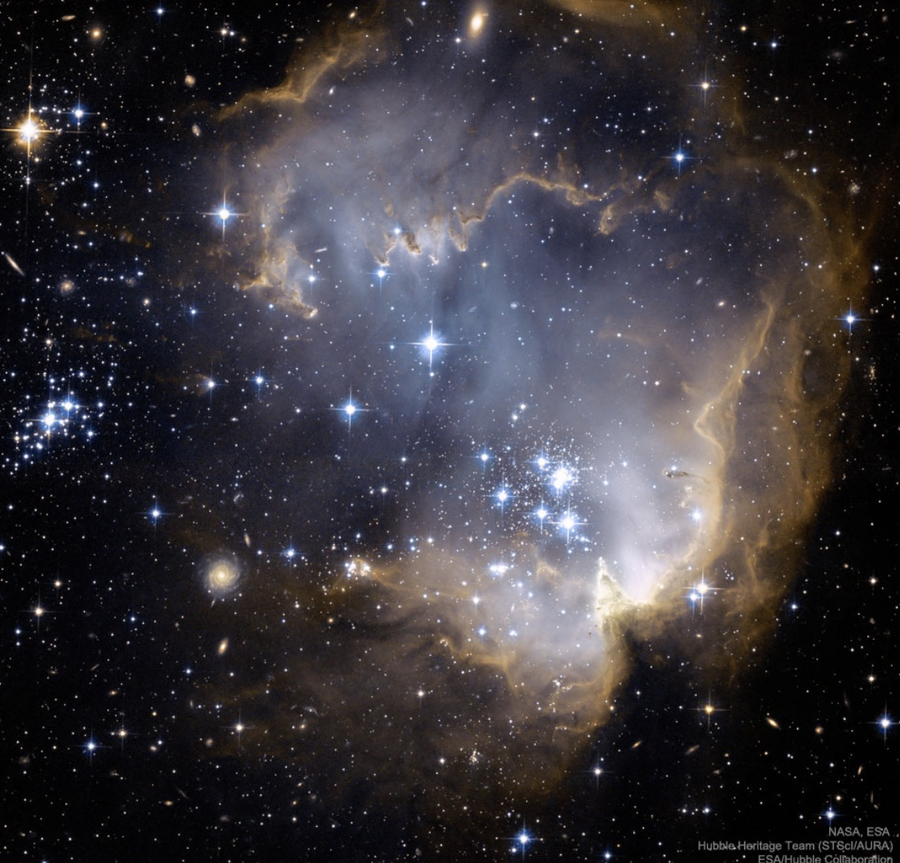

Questa è la foto astronomica pubblicata dalla NASA quel giorno, il 13 aprile 2026.
Forse non rappresenta il cielo sopra di noi in quel momento, ma ogni volta che la guardo mi ricorda che, in un universo immenso, io e te in qualche modo ci siamo trovati.
Ci sono numeri che per qualcuno sono solo numeri, ma per noi sono diventati qualcosa di più.
Il 13 (e il tuo 22) hanno accompagnato la nostra storia, dal 13/08/24 fino ad oggi, come piccoli segni che ci ricordano momenti, emozioni e tutto quello che abbiamo costruito insieme.
Ho scelto questa foto del cielo perché, proprio come le stelle, alcune cose sembrano lontane e impossibili da raggiungere, ma quando trovi quella giusta capisci che vale la pena guardarla.
E noi ci siamo gurdati, sempre, anche e soprattutto da lontano.
Qiesta canzone racchiude un po’ quello che sento: l’idea che, anche in un universo pieno di luci, ce ne sia una capace di attirare lo sguardo più di tutte le altre.
Tra miliardi di stelle e infinite possibilità, spero che ci ricorderemo sempre di noi, del nostro percorso, dei momenti belli e di quelli difficili che ci hanno fatto crescere. E come abbiamo sempre repostato "All this and we still met"
Perché tra tutte le stelle dell’universo, tra tutte le persone che potevano incrociare la nostra strada, la mia preferita sei tu.
Stelle — Geolier
Ascolta su Spotify